The four options
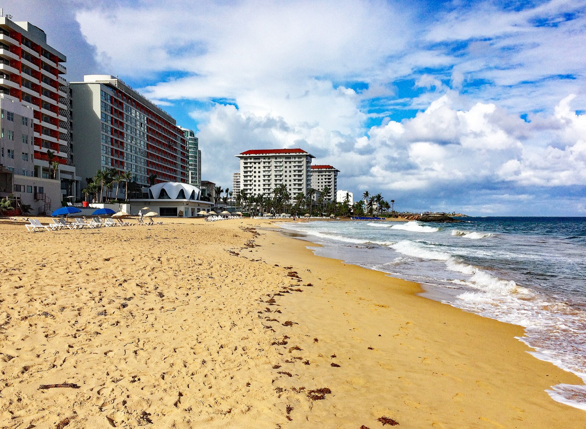
Puerto Rico
Rincón, with Old San Juan at each end
A pool house in Rincón, a surf town you walk around, with a night in Old San Juan on the way in and the way out so nobody drives the west side in the dark with Taylor.
$26,600 to $49,200 for ten
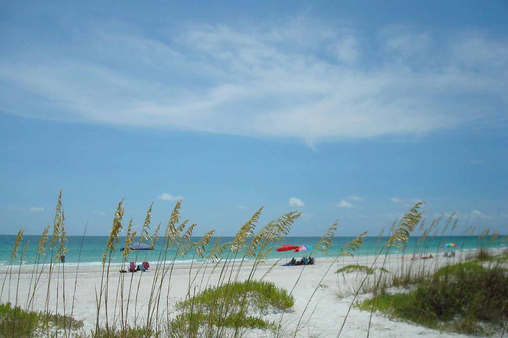
Anna Maria Island
Holmes Beach, Florida
A pool house a short walk from the Gulf on a bike-everywhere island with walkable villages.
$26,200 to $51,400 for ten
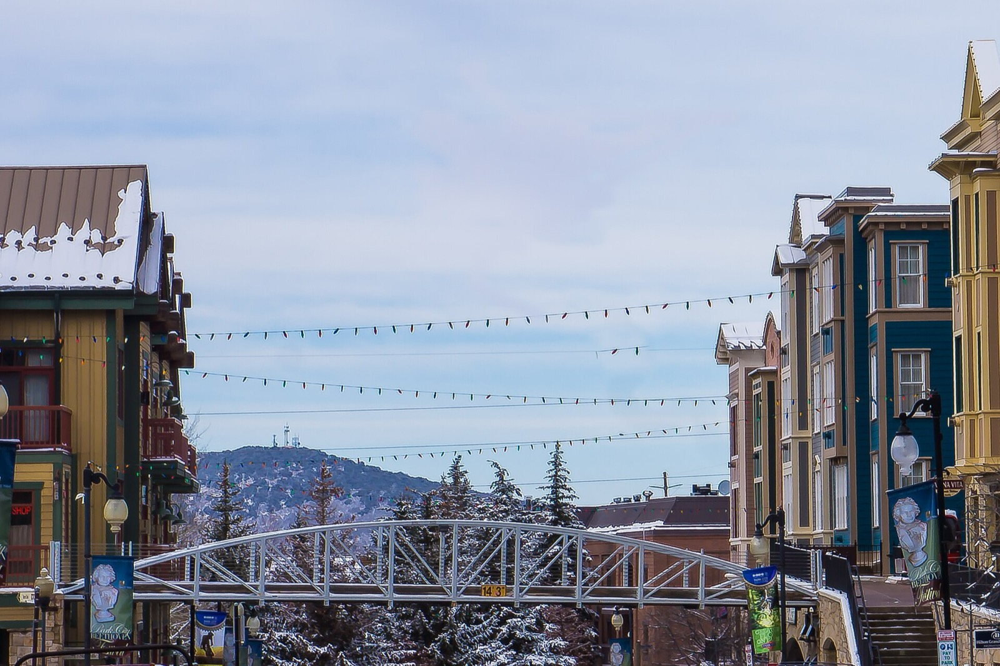
Park City
Old Town, Utah
An Old Town house with Main Street and the Town Lift at the door.
$60,000 to $99,000 for ten
Asheville
Blue Ridge, North Carolina
A six-bedroom house with a hot tub fifteen minutes from downtown, a seven-hour drive from Virginia Beach.
$22,200 to $45,500 for ten
Where they are from home
Dashed lines run from Norfolk; Richmond and Austin fly their own routings. Click a pin for the name.
Who is going
Mom, Patrick and Sara, Andrew and Trisha, Kristina and Michael with Bennett (7) and Taylor (3), and Daniel. Seven fly from Norfolk, two from Richmond, one from Austin.
What every option has to do
- One roof, a bedroom for each couple, Mom, Daniel and the kids: six doors, or five plus a real bunk room.
- A base you can walk out of: a safe town with things to do on foot, and cars for the group. No compound.
- Mom's rule: a nice place to stay and walking options, one anchor a day, split up for specific things and reconvene for dinner.
- Food: Sara is gluten-free at celiac level and eats real butter, dairy, eggs and meat. Kristina has a tree-nut allergy. Mom is pescatarian. Every option runs on a house kitchen plus one or two chef nights.
- The adventure crew (Patrick, Daniel, Andrew, Mom, Kristina) and the relaxed crew (Sara, Trisha, Michael, the kids) each get a real week, in parallel, from the same house.
How to read the prices: each line is a low and a high for all ten people for the week, built from published rates where they exist and estimates everywhere else. The one-line total is the sum of the lines. Houses have not been quoted for these dates yet, and that line is the swing factor everywhere.
Puerto Rico
Rincón, with Old San Juan at each end
Punta Higuera lighthouse, Rincon. Photo: P. Hughes, CC BY 4.0 (source)

A pool house in Rincón, a surf town you walk around, with a night in Old San Juan on the way in and the way out so nobody drives the west side in the dark with Taylor. No passports, nonstops from Norfolk and Richmond, US medicine, sea level, real winter surf and a boat dive for the crew, pool and the calm side of the beach for the kids.
Why it works
- US soil: no passports, US hospitals and pharmacies, dollars, phones that just work.
- JetBlue announced a Sunday nonstop from Norfolk and a Tuesday, Thursday, Saturday nonstop from Richmond. Daniel connects once from Austin.
- Real adventure from the door: December surf at Maria's, Domes and Sandy Beach, a two-tank boat dive at Desecheo Island, the Gozalandia waterfall, an Isabela surf day.
- Old San Juan on foot at each end: El Morro, the walls, a good dinner.
- The cheapest warm option on the list.
The catch
- December is big-wave season, so the kids stay on the pool and the calm-side beaches, and reef snorkeling is a summer thing.
- Gluten-free restaurants are thin. Most meals are at the house, with a chef for two nights.
- The best six-bedroom house found is about a mile from the plaza. The one that is an easy walk to town has five bedrooms.
- The Norfolk nonstop does not fly Saturdays, and its clock times still need to be confirmed on jetblue.com.
- Rincón has no hospital. The nearest ER, with a separate one for kids, is in Aguadilla, about 25 to 30 minutes away.
Weather that week. Dry-season tropics: highs in the mid-80s, lows around 70, brief trade-wind showers, sea about 80 degrees. Winter swell on the west coast.
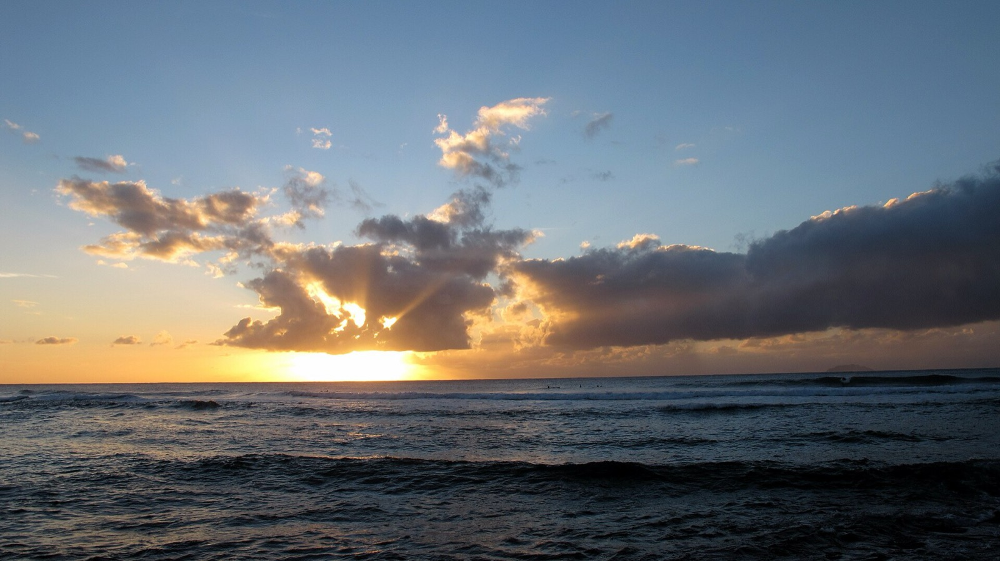

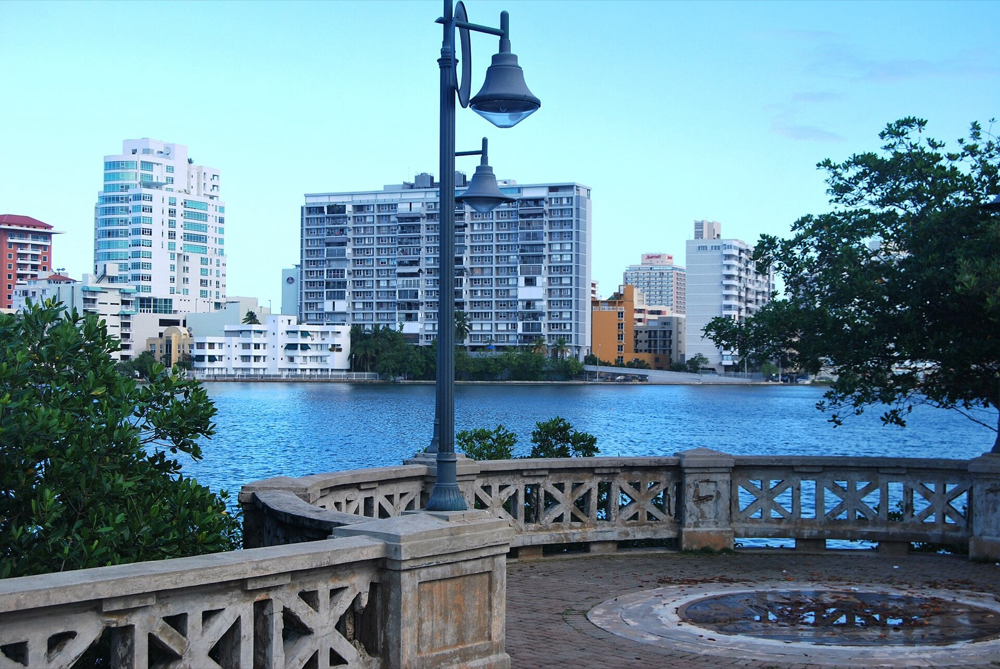

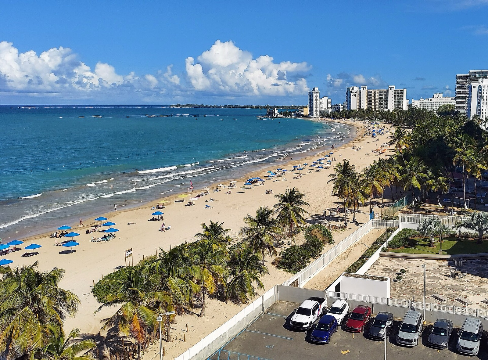


The map
- Rincón plaza
- Casa Cooky area, Corcega side
- Maria's Beach, Maria's Luxury Villa
- Punta Higuera lighthouse, sunsets
- Domes and Steps beaches
- Sandy Beach, Puntas
- Desecheo Island, boat dive
- Gozalandia Falls
- Jobos Beach, Isabela surf day
- Aguadilla airport (BQN), 30 to 40 minutes
- Old San Juan, first and last nights
- San Juan airport (SJU)
Getting there
| Norfolk (7) | JetBlue nonstop to San Juan, announced for Mon, Wed, Fri and Sun (flight 929 out, 928 back). Sunday Dec 27 out and Sunday Jan 3 back fit the pattern; Mon Dec 28 and Mon Jan 4 are the fallbacks. About 3.5 hours in the air. Link | $600 to $1,000 a seat |
|---|---|---|
| Richmond (2) | JetBlue nonstop Tue, Thu and Sat only, so Andrew and Trisha drive to Norfolk and fly with the group, or fly Sat Dec 26 and Sat Jan 2 with an extra San Juan night, or connect once via Charlotte or Atlanta on the Sundays. Link | $600 to $1,000 a seat |
| Austin (1) | One stop via Charlotte, Dallas, Atlanta or Houston. Southwest's seasonal Austin to San Juan nonstop is unconfirmed for the holiday window. Link | $600 to $1,000 |
| On the ground | Two seven-seat vehicles for the week. San Juan to Rincón is about 2.5 hours, done in daylight both ways. | $1,600 to $2,800 |
Where we would stay
Casa Cooky, Corcega side
Six bedrooms as three two-bedroom suites, 6.5 baths. The whole property is fenced with privacy walls and a code-gated private pool. Steps from the beach; the plaza is about a mile down the road. Air conditioning in the bedrooms only.
Estimate $1,200 to $2,000 a night, unquoted
Best fence and six doors. Quote first.
Maria's Luxury Villa, Maria's Beach
Eight bedrooms, two full kitchens, a full-size pool and two hot tubs, a generator and Starlink. Gated oceanfront on a surf break, so the kids use the pool.
Published $2,350 a night in high season with a six-night holiday minimum, taxes and housekeeping included, about $14,100 for Dec 28 to Jan 3
Strongest house systems and the only published rate. Quote second.
Ensenada five-bedroom, near Puntas
Five bedrooms including a double-plus-bunk room for the kids, a main-level bedroom with a full bath for Mom, gated and walled, private pool, backup generator. The listing calls the plaza an easy walk.
Not shown without dates
The walk-to-town house. Five doors, so the kids share with Kristina and Michael.
Rincón Beach House at Sandy Beach, Puntas
Six bedrooms in two units with two kitchens, whole-home generators and solar, a private pool, a minute's walk to Sandy Beach. About 15 minutes by car to the plaza.
About $890 to $1,030 a night off-peak; holiday rate unknown
Six doors in the surf pocket. A car to town.
The week
| Day | Everyone | Adventure crew | Relaxed crew and kids |
|---|---|---|---|
| Sun Dec 27 | Fly in. Sleep in Old San Juan. Dinner in the old city. | ||
| Mon Dec 28 | Drive west in daylight with a grocery stop. Villa by early afternoon. Pool, then sunset at the Punta Higuera lighthouse. | ||
| Tue Dec 29 | Dinner at the house. | Dawn surf at Maria's or Domes. Lessons at the Marina for Andrew, Daniel and Kristina. | Corcega shallows, pool, a long lunch, the town on foot. |
| Wed Dec 30 | First chef night. | Desecheo two-tank boat dive for Mom and the certified divers, seas permitting. Patrick snorkels or fishes. | Massage at the house. Sara's Pilates if the studio checks out. Kids in the pool. |
| Thu Dec 31 | Gozalandia waterfall in the morning, about an hour away, splash pool for the kids, picnic. Kids' dinner early, New Year's Eve chef dinner on the terrace. | ||
| Fri Jan 1 | Nothing scheduled. Pool, cards, a lighthouse walk. Snorkel at Steps only if the sea is flat. | Optional Isabela surf run (Jobos, Shacks). | Sunset beach horseback ride with Bennett and Mom. |
| Sat Jan 2 | Drive east. Old San Juan on foot: El Morro, the walls, dinner. Hotel night. | ||
| Sun Jan 3 | Morning flights home. Andrew and Trisha can take the Saturday Richmond nonstop the day before. |
Preliminary pricing
| Line | Low | High | Basis |
|---|---|---|---|
| Villa, six nights | $7,000 | $14,000 | Casa Cooky estimate to Maria's published rate |
| Flights, ten seats | $6,000 | $10,000 | Holiday-week nonstops and one-stops; Taylor needs a seat |
| Old San Juan, two nights, five rooms | $4,000 | $7,000 | Estimate |
| Two seven-seat vehicles | $1,600 | $2,800 | Estimate with insurance |
| Chef, two dinners | $1,500 | $4,400 | Published per-guest menus run $140 to $220 |
| Dive, lessons, horses, waterfall | $2,500 | $4,500 | Estimate |
| Groceries and dining | $3,500 | $5,500 | Estimate |
| Massages and extras | $500 | $1,000 | Estimate |
| Total for ten | $26,600 | $49,200 | About $2,660 to $4,920 a head, kids included |
Links
Activities
Food
Anna Maria Island
Holmes Beach, Florida
Tranquil Gulf-side beach with sea oats, turquoise water and white sand, Holmes Beach (Anna Maria Island). Photo: Ann Caron, CC BY-SA 3.0 (source)

A pool house a short walk from the Gulf on a bike-everywhere island with walkable villages. The easiest flights on the list and the best week for the spouses and the kids. The crew gets a manatee morning, a boat day and bikes, not surf or snow.
Why it works
- About six hours door to door: Breeze flies Norfolk to Tampa nonstop, Richmond has had the same, and Austin has nonstops to Tampa.
- Beach and pool every day for a three-year-old, bikes for a seven-year-old, Pine Avenue and Bridge Street for the adults.
- Sarasota and St. Petersburg are 30 to 60 minutes away: the Ringling, Selby Gardens' holiday lights, the Chihuly Collection (Mom's September trip, continued), the Mote aquarium.
- Crystal River manatee snorkel in peak season, a boat day to Egmont Key, mangrove paddles.
The catch
- The thinnest week for the adventure crew. The Gulf is usually flat in December.
- Gulf water runs mid to upper sixties, so the pool carries the swimming.
- The flagship listing has five true bedrooms plus a den with a bunk and trundle; confirm a real sixth room.
- Holiday-week availability on the island is the real question this late. Published peak rates for six-bedroom houses run $1,755 to $2,251 a night before taxes and fees.
- One celiac-aware restaurant on the island (The Waterfront, a single undated review). Most meals at the house, with a chef for New Year's Eve.
Weather that week. Highs around 70 to 75, lows in the 50s, Gulf water in the high 60s. Beach and pool weather most days; a cold front can bring wind.

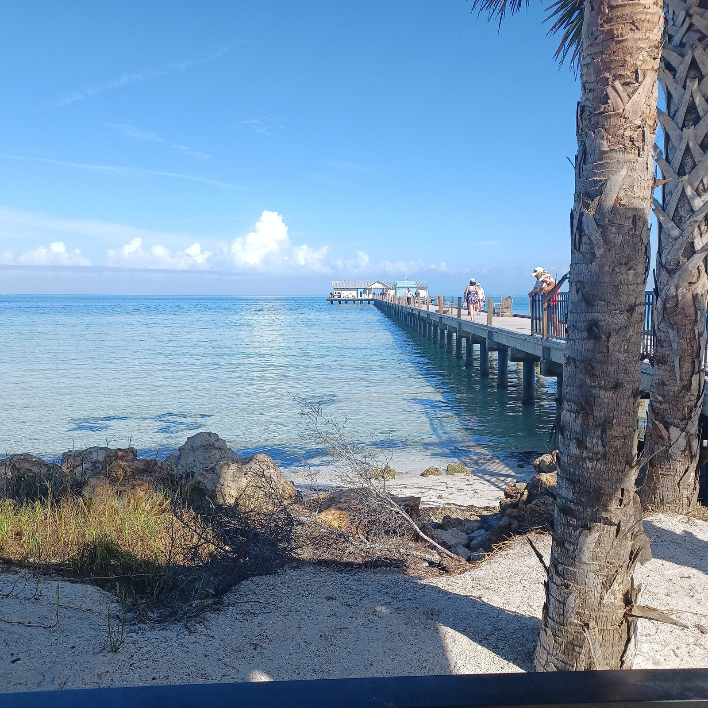

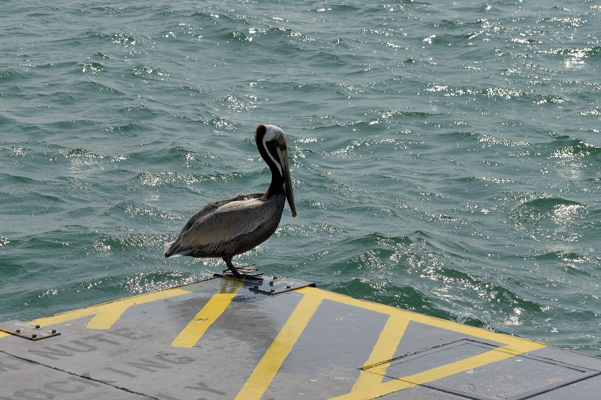


The map
- Holmes Beach, the house
- Pine Avenue, Anna Maria
- Bean Point sunsets
- Bridge Street, Bradenton Beach
- Egmont Key, boat day
- The Ringling
- Mote SEA aquarium
- Selby Gardens
- Chihuly Collection, St. Petersburg
- Crystal River manatees (about 2 hours)
- Tampa airport (TPA)
- Sarasota airport (SRQ)
Getting there
| Norfolk (7) | Breeze Airways nonstop to Tampa, about 2 hours 15 minutes, then about 1 hour 15 minutes by car to Holmes Beach. Frontier is seasonal. Link | $250 to $600 a seat |
|---|---|---|
| Richmond (2) | Breeze nonstop to Tampa on last year's schedule, or Sarasota via Breeze; confirm the December days. Link | $250 to $600 a seat |
| Austin (1) | Southwest or Delta nonstop to Tampa, about 3 daily on weekdays; Allegiant to Sarasota, 30 minutes from the island. Link | $250 to $600 |
| On the ground | Two SUVs for the week, plus bikes on the island. | $1,200 to $2,500 |
Where we would stay
Paradise Beach House, 403 42nd St, Holmes Beach
Three king masters, a queen room, a twin room and a den with a bunk and trundle, every bedroom en suite, heated pool, a short walk to the beach and shops.
Estimate $2,000 to $3,500 a night for the holiday week, unquoted
Five true bedrooms plus the den. Quote and ask about the den.
Emerald Kite six-bedroom retreat, Holmes Beach
Six bedrooms, five baths, private pool.
Published peak $1,755 a night before taxes and fees
Six doors at the published peak rate.
Emerald Kite luxury six-bedroom, Holmes Beach
Six bedrooms, four baths, private pool.
Published peak $2,251 a night before taxes and fees
Six doors; the pricier of the two.
The week
| Day | Everyone | Adventure crew | Relaxed crew and kids |
|---|---|---|---|
| Sun Dec 27 | Fly to Tampa, pick up the cars, Publix run, check in. Pool, then sunset at Bean Point. | ||
| Mon Dec 28 | Island day: bikes, the beach, Pine Avenue, lunch at The Waterfront. | Paddle the mangrove tunnels. | Sara's Pilates or a spa slot. Kids at the beach. |
| Tue Dec 29 | Dinner at the house. | Dawn departure for the Crystal River manatee snorkel, back mid-afternoon. | Mote SEA aquarium in Sarasota with the kids. |
| Wed Dec 30 | Sarasota together: the Ringling (art, Ca' d'Zan, the circus museum for Bennett), then Selby Gardens' Lights in Bloom after dark. | ||
| Thu Dec 31 | New Year's Eve chef dinner at the house. | Half-day boat charter: fishing, dolphins, Egmont Key. Wing-foil or kite if a front brings wind. | Beach, pool, spa. Mom's option: a plane checkout at Sarasota and a coastal flight. |
| Fri Jan 1 | Slow beach day. Patrick's family photos at golden hour. | ||
| Sat Jan 2 | St. Petersburg morning at the Chihuly Collection, waterfront lunch, back for sunset. | ||
| Sun Jan 3 | Checkout and the same nonstops home. |
Preliminary pricing
| Line | Low | High | Basis |
|---|---|---|---|
| House, seven nights | $14,000 | $28,000 | Published peak $1,755 to $2,251 a night plus taxes and fees; no holiday quote |
| Flights, ten seats | $3,000 | $6,000 | Breeze, Southwest, Delta nonstops |
| Two SUVs and bikes | $1,200 | $2,500 | Estimate |
| Boat charter and manatee tour | $1,500 | $2,500 | Estimate |
| Museums, lights, aquarium | $500 | $900 | Estimate |
| Chef, one or two nights | $1,500 | $4,000 | Chef Melissa's Kitchen or similar |
| Groceries and dining | $4,000 | $6,000 | Estimate |
| Lessons, plane rental, spa | $500 | $1,500 | Estimate |
| Total for ten | $26,200 | $51,400 | About $2,620 to $5,140 a head, kids included |
Links
Activities
Food
Park City
Old Town, Utah
Main Street Park City after fresh snow, Town Lift footbridge and mountain beyond, string lights overhead. Photo: Michelle Maria, CC BY 3.0 (source)

An Old Town house with Main Street and the Town Lift at the door. The best riding week by a mile and the best town to walk out into. It costs three things: a third winter trip in two years, 7,000 feet for Sara after Breckenridge, and a cold week for Michael, Trisha and the kids.
Why it works
- Park City Mountain from the Town Lift, a walk from the house, five or six riding days. Canyons Village on the same pass. A Big Cottonwood powder day for the crew.
- Main Street: shops, galleries, restaurants, the free trolley, a hot tub at the house every night.
- Utah Olympic Park and the Comet bobsled for Kristina, who has wanted to bobsled since Lake Placid (age rules to confirm).
- The Viking Yurt sleigh-ride dinner for Mom: the music-with-dinner evening she writes up.
- Daniel's easiest trip of any option: a nonstop from Austin to Salt Lake.
The catch
- A third winter trip in two years, against Mom's own note that not everyone snowboards.
- Altitude: Old Town sits near 7,000 feet, and Sara was sick at Breckenridge.
- A cold week for the relaxed crew, with highs in the 20s and 30s.
- Peak-week pricing: a six-bedroom Old Town house over New Year's runs $35,000 to $55,000 for the week, before flights and lift tickets.
- Luna's Kitchen is the only dedicated gluten-free kitchen in town, counter-service and closed Sundays; the two-kitchen house gives Sara her own kitchen.
Weather that week. Cold, dry, sunny days: highs in the 20s and 30s, lows in the teens. Snow depends on the year; December averages 30 to 65 inches depending on the source.
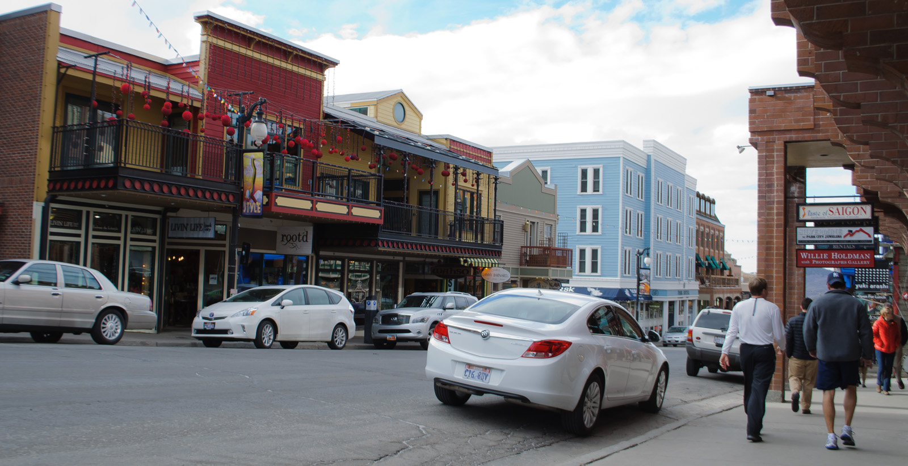
.jpg){kind=link}
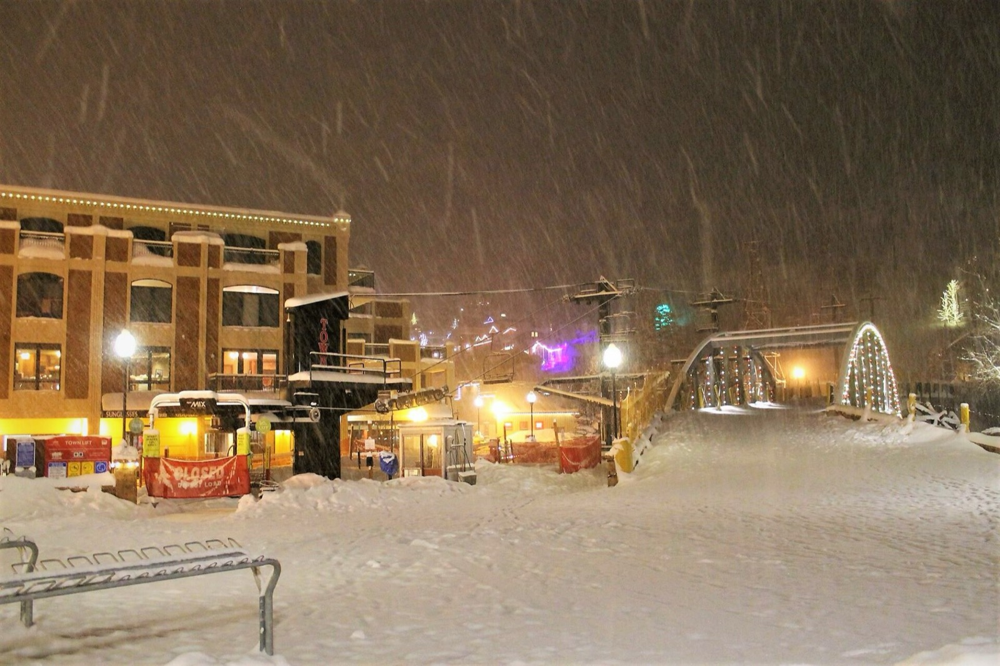

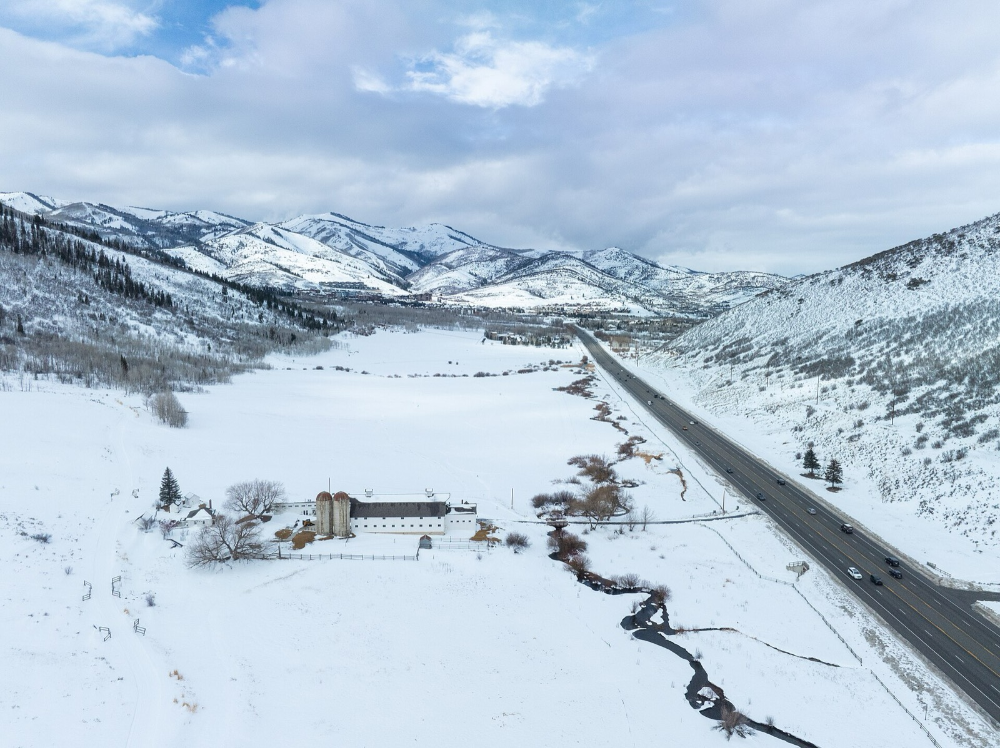


The map
- Old Town house, Main Street
- Town Lift
- Park City Mountain base
- Canyons Village
- Deer Valley
- Utah Olympic Park
- Woodward Park City
- Kimball Junction groceries
- Brighton and Solitude, Big Cottonwood
- Salt Lake City airport (SLC)
Getting there
| Norfolk (7) | One stop to Salt Lake City on Delta via Atlanta, or United via Denver or Washington. A nonstop may exist some days; check Dec 27 and Jan 3. Then 40 minutes to Old Town. Link | $700 to $1,200 a seat |
|---|---|---|
| Richmond (2) | One stop via Atlanta, Denver or Washington. Link | $700 to $1,200 a seat |
| Austin (1) | Nonstop on Delta (three or four a day) or Southwest, about 3 hours. Link | $400 to $700 |
| On the ground | Two AWD SUVs or a 12-passenger van. Groceries at Kimball Junction on the way in. | $1,500 to $3,000 |
Where we would stay
Old Town, two kitchens, hot tub, 4 minutes to everything
Six bedrooms, five baths, sleeps 14: two kings, three queens and a twin room, two kitchens, a hot tub and a fireplace. A three-minute walk to Main Street and about 11 minutes on foot to the Town Lift.
Estimate $2,500 to $3,800 a night, unquoted; verifiers put the week at $35,000 to $55,000
The two kitchens solve Sara's food. Quote first. Likely the same house as the Airbnb listing below.
Park City Retreat, private deck and hot tub
Six bedrooms, five baths, eight beds, sleeps 14, Old Town.
No price shown without dates
Probably the same house on a second platform.
Spacious Mountain Oasis 1060
Six bedrooms, sleeps 12, hot tub and an outdoor lounge.
Estimate $3,000 to $4,500 a night, unquoted
The backup.
The week
| Day | Everyone | Adventure crew | Relaxed crew and kids |
|---|---|---|---|
| Sun Dec 27 | Fly to Salt Lake (Daniel nonstop; Norfolk and Richmond via Atlanta). 40 minutes to Old Town, groceries at Kimball Junction, hot tub, a simple dinner at the house. | ||
| Mon Dec 28 | Family dinner at the house. | Ride Park City Mountain from the Town Lift. | Bennett and Taylor in ski school. Sara at Lagree, then lunch at Luna's Kitchen. Michael and Trisha walk Main Street. |
| Tue Dec 29 | Dinner out at Riverhorse on Main. | Ride the Canyons side. | Sledding at the house or a snow-play afternoon with the kids, then a spa afternoon. |
| Wed Dec 30 | Utah Olympic Park in the morning, Kristina's bobsled if the age and season rules allow. Adults at the Viking Yurt sleigh-ride dinner while Mom or a sitter has the kids. | ||
| Thu Dec 31 | Half-day riding, then the New Year's Eve chef dinner at the house and Main Street fireworks for whoever is awake. | ||
| Fri Jan 1 | Slow morning. | The big day: a Big Cottonwood powder run, or a guided backcountry day for the brothers if cleared. | Sara and Trisha Nordic or snowshoe. Kids skate. Mom's scenic-flight add-on. |
| Sat Jan 2 | Last laps for the crew, a Deer Valley morning for the skiers, pack. | ||
| Sun Jan 3 | Fly home. |
Preliminary pricing
| Line | Low | High | Basis |
|---|---|---|---|
| House, seven nights | $35,000 | $55,000 | Six-bedroom Old Town, holiday week, unquoted |
| Flights, ten seats | $6,000 | $10,000 | One-stops from Norfolk and Richmond, nonstop from Austin |
| Lift access, five riders, five or six days | $4,500 | $8,000 | Epic Day Passes bought before the early-December deadline; window rates roughly double |
| Kids' ski school | $1,500 | $3,000 | Two or three days each |
| Gear rentals | $1,000 | $2,000 | Estimate |
| Two AWD SUVs or a van | $1,500 | $3,000 | Estimate |
| Groceries and four or five dinners out | $6,000 | $9,000 | Estimate |
| Chef, New Year's Eve | $1,500 | $3,000 | Estimate |
| Viking Yurt, bobsled, spa, Lagree | $3,000 | $6,000 | Estimate |
| Total for ten | $60,000 | $99,000 | About $6,000 to $9,900 a head, kids included |
Links
Activities
Asheville
Blue Ridge, North Carolina
Biltmore House, front lawn and fountain. Photo: Blake Lewis, CC BY-SA 2.0 (source)

A six-bedroom house with a hot tub fifteen minutes from downtown, a seven-hour drive from Virginia Beach. Biltmore at Christmas, the Grove Park spa and gingerbread houses, a dedicated gluten-free restaurant that serves real food, and skiing at Cataloochee as a bonus, not a plan.
Why it works
- The cheapest option by a wide margin, and the safest and simplest: drive down, no airports for nine of the ten.
- Biltmore's Candlelight Christmas Evening, Olmsted's gardens, the Grove Park Inn's National Gingerbread House display.
- Posana downtown has been fully gluten-free since 2009 and serves steak, short rib and lobster gnocchi.
- A hike-and-spa week for the crew, with Cataloochee or a Sugar Mountain day when the snowmaking holds, and Bent Creek or DuPont for bikes.
- A fireplace, a hot tub and everyone under one roof: the lodging Mom praises most in her blog.
The catch
- Thin for the adventure crew. Cataloochee gets about 5 inches of natural snow in December and runs on snowmaking; a warm spell closes it.
- Nobody in the family has pitched it.
- Snow in town is unlikely; December runs a 51-degree high and a 31-degree low.
- The heated pool at the lead house is a paid extra and unconfirmed for winter.
- Daniel's Austin flight is a connection or a long drive; a seasonal Allegiant nonstop is unconfirmed for December.
Weather that week. December highs around 51, lows around 31, snow in town unlikely. The ski areas run on snowmaking and a warm week can shut them.
.jpg){kind=link}
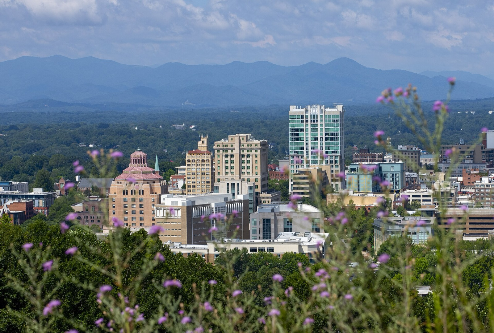

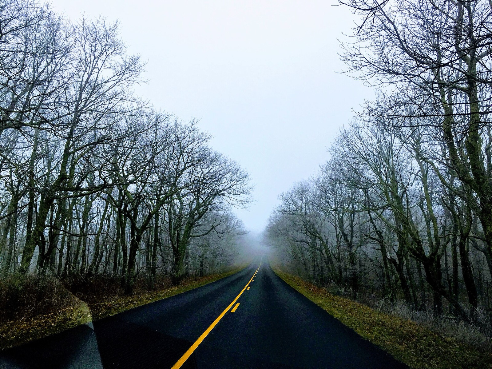


The map
- Downtown Asheville, Posana
- The house, about 15 minutes out
- Biltmore Estate
- Omni Grove Park Inn
- River Arts District
- Bent Creek trails
- Cataloochee Ski Area (about 45 minutes)
- Sugar Mountain (about 2 hours)
- DuPont State Forest
- Asheville airport (AVL)
Getting there
| Norfolk (7) | Drive: about 430 miles, 8 to 9 hours with stops and a three-year-old. Flying is one stop via Charlotte to Asheville. Link | $120 to $200 in gas per car, or $600 to $800 a seat to fly |
|---|---|---|
| Richmond (2) | Drive: about 5.5 to 6 hours. | Gas |
| Austin (1) | One stop via Charlotte, Atlanta or Dallas to Asheville. An Allegiant seasonal nonstop appears on 2025 listings and is unconfirmed for December 2026. Link | $500 to $800 |
| On the ground | Three family cars from Virginia; one rental for Daniel if he flies. | $0 to $1,200 |
Where we would stay
Asheville 12 (The Top Villas)
Six bedrooms including a twin bunk room, five baths, sleeps 16, hot tub, a pool that can be heated for a fee, about 15 minutes from downtown.
From $288 a night off-peak; holiday week estimated $900 to $1,500 a night, unquoted; verifiers put the week at $11,000 to $20,000
The lead. Quote first and ask about Christmas-week minimums.
Our Mountain Retreat, Arden (south Asheville)
Four bedrooms in the main house plus two in a guest house, sleeps 16.
Not retrieved; estimate $900 to $1,500 a night
Six doors across two buildings on one property.
West Asheville six-bedroom, about 6,000 square feet
Six bedrooms, four baths, hot tub, barrel sauna, sleeps 16.
Not retrieved; estimate $900 to $1,500 a night
The backup, close to downtown.
The week
| Day | Everyone | Adventure crew | Relaxed crew and kids |
|---|---|---|---|
| Sun Dec 27 | Drive down (Virginia Beach about 8 hours, Richmond about 6). Daniel flies via Charlotte. Grocery run, hot tub, a simple dinner at the house. | ||
| Mon Dec 28 | Downtown walk and a Posana lunch. Grove Park Inn gingerbread houses in the evening public window. | A hike before lunch. | Sara's Pilates, the kids at the house pool and hot tub. |
| Tue Dec 29 | Everyone back for dinner. | Ski or ride Cataloochee, about 45 minutes away. | Grove Park spa. Kids and Michael at the house. |
| Wed Dec 30 | Biltmore together: the house and grounds by day, then the Candlelight Christmas Evening with an early slot for the kids. | ||
| Thu Dec 31 | New Year's Eve chef dinner at the house. | Sugar Mountain day: skiing for the crew, tubing for Bennett and Taylor with an adult. | River Arts District and a long lunch for whoever stays. |
| Fri Jan 1 | Slow morning, a group hike with a view, leftovers and games. | ||
| Sat Jan 2 | Patrick's family-photo hour at golden light. | Mountain bikes at Bent Creek or DuPont, or the Cataloochee Valley elk in the Smokies. | Downtown bookstores and coffee. |
| Sun Jan 3 | Drive home. |
Preliminary pricing
| Line | Low | High | Basis |
|---|---|---|---|
| House, seven nights | $11,000 | $20,000 | Six-bedroom with hot tub, holiday week, unquoted |
| Travel | $1,000 | $8,000 | Three cars from Virginia plus Daniel's flight, or everyone flies one-stop at the high end |
| Rental car if flying | $0 | $1,200 | |
| Ski days, five people, two days | $1,200 | $2,500 | Lift and rentals, estimate |
| Biltmore day and Candlelight evening | $1,200 | $1,800 | Eight adults plus kids, estimate |
| Spa | $800 | $1,500 | Two or three treatments |
| Chef, New Year's Eve | $2,000 | $3,500 | Estimate |
| Groceries and dining | $5,000 | $7,000 | Ten people, eight days |
| Total for ten | $22,200 | $45,500 | About $2,220 to $4,550 a head, kids included |